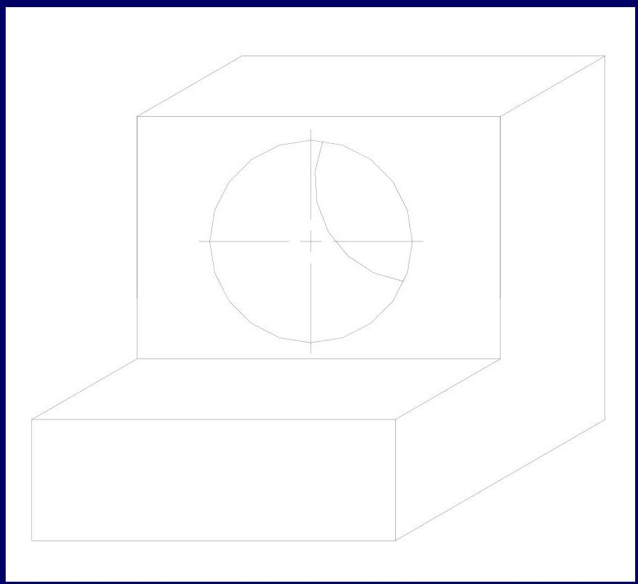
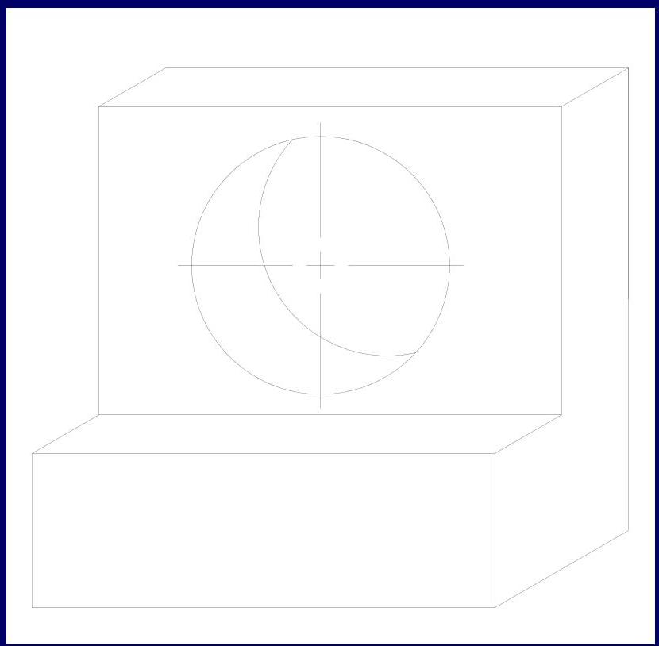
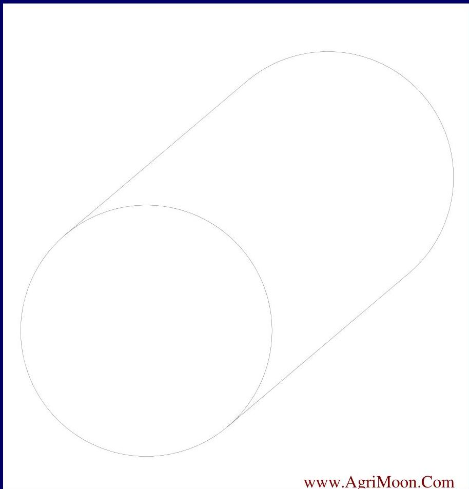
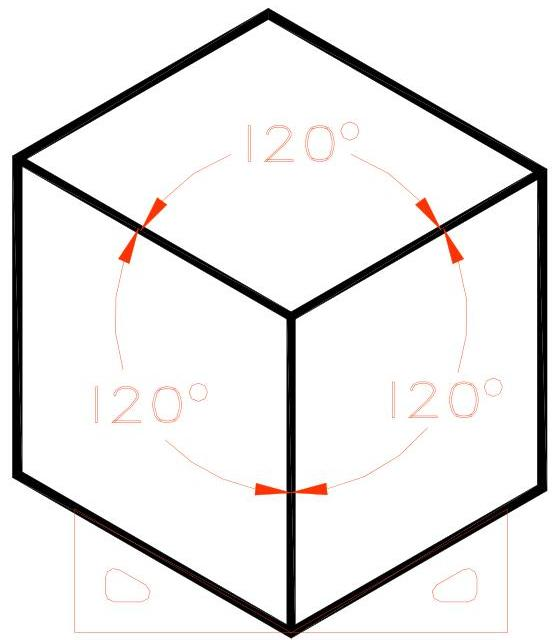
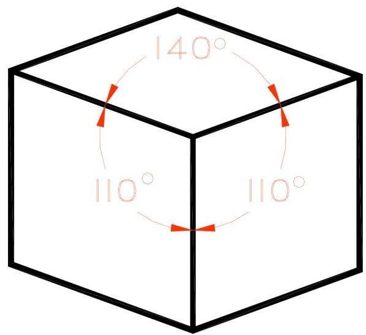
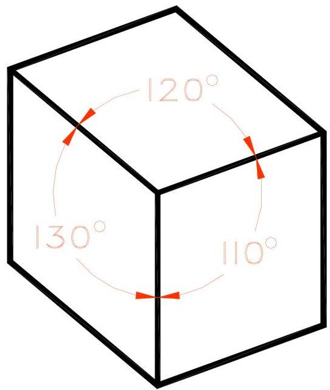
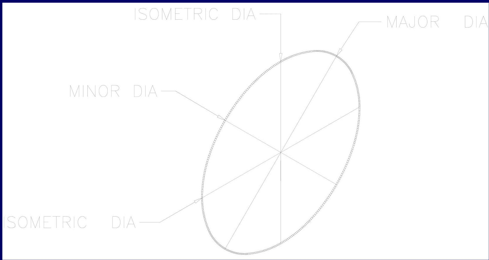
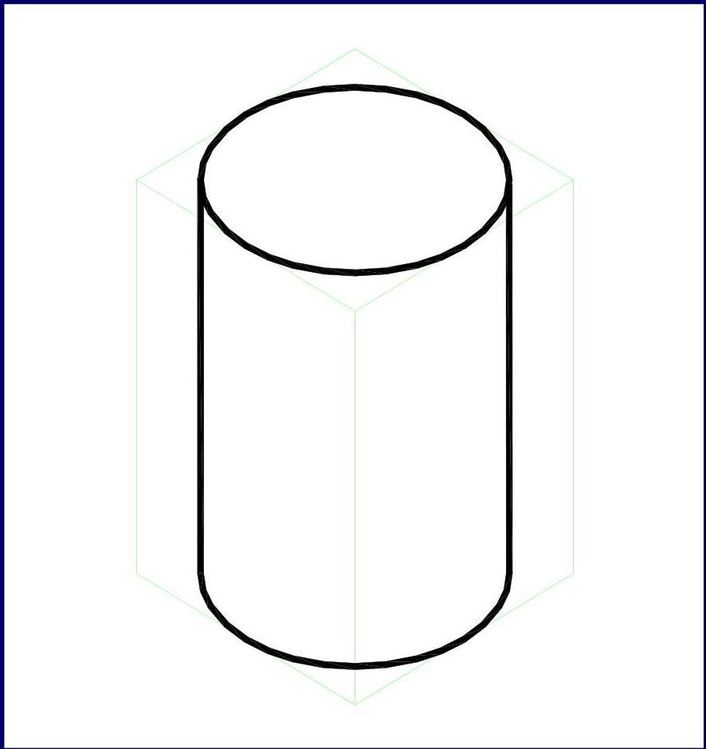

🧊
Topic 07
Types of Pictorial Projection
01
Oblique Projections
There are two primary types of oblique projection used in engineering drawing.
Characteristics
- Front view true size
- Receding Axis Angle (Normally $30^{\circ}$, $45^{\circ}$ or $60^{\circ}$) is Variable
- Depth dimension (receding axis) true size
Characteristics
- Front view true size
- Receding Axis Angle (Normally $30^{\circ}$, $45^{\circ}$ or $60^{\circ}$) is Variable
- Depth dimension (receding axis) half size
Side by Side Comparison


Visual Quiz: Which is the cube?
Test your perception of oblique projections.

Reveal Answer
Were you right?
Even though Cavalier projection uses true depth, it often appears distorted to the human eye compared to Cabinet projection which uses half depth.
02
Features in Oblique
Angles in Oblique
- Angles in front view are drawn true size.
- Other angles must be located using coordinates.
- Appearance of angles may be distorted.
Circles in Oblique
- Drawn true size in front view.
- Drawn as ellipses on receding planes.
- Layout using a Rhombus.
Cylinders in Oblique
- Front and Back surfaces are circular.
- "Sides" are drawn as lines tangent to the front and back.

03
Axonometric Projections
Axonometric projections are classified based on the orientation of the object axes.
| Type | Axes Condition | Angles Condition |
|---|---|---|
| A. ISOMETRIC | 3 Equal axes | 3 Equal angles |
| B. DIMETRIC | 2 Equal axes | 2 Equal angles |
| C. TRIMETRIC | 0 Equal axes | 0 Equal angles |

A. ISOMETRIC

B. DIMETRIC

C. TRIMETRIC
04
Isometrics
Key Rules
- Axes equally separated ($120^{\circ}$).
- H, W, and D measurements are true size along iso. axes.
- Angles must be located by coordinates.
- Circles appear as ellipses on all surfaces.
Isometric Ellipses

Construction of Cylinders
- Lightly block in the cylinder.
- Sketch the upper and lower ellipses.
- Connect the ellipses with Tangent lines.
- Darken the lines.
